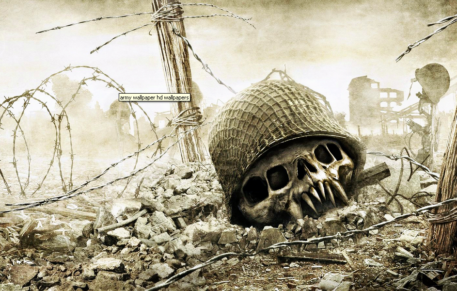
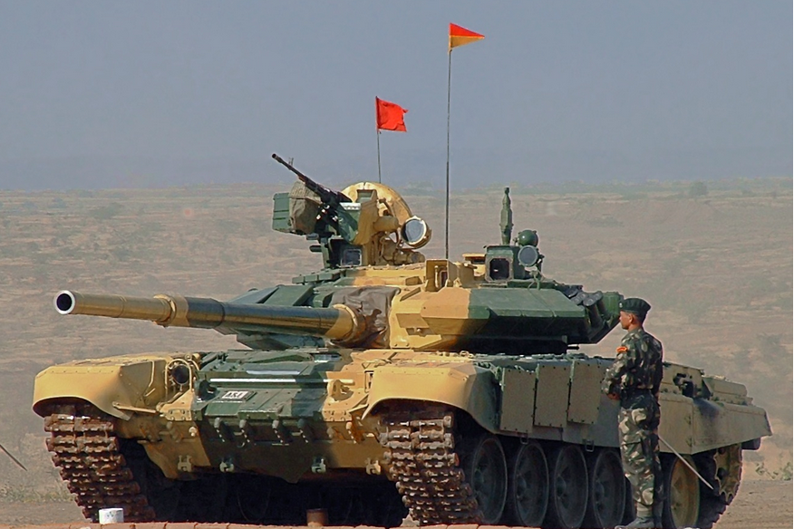

<body background=" d.bmp"><embed src="sare.mp3" hidden="true" autostart=true> <b><font face="Bradley Hand ITC"  color=maroongreen ><br>As nature's fury hit the north Indian state of Uttarakhand last week, thousands
 of pilgrims and locals who were left stranded in the flood-hit regions might have 
lost their hope after the routes connecting the areas of safety were destroyed by the
 flash floods, until they saw the men in uniform - Indian Army.<br>
Gujarat Chief Minister Narendra Modi and Congress party vice president Rahul  
Gandhi hogged the limelight by visiting the flood-ravaged state, before war of words
 broke out between BJP and Congress over their much-publicised visits. As politicians
 were trying to politicize the whole crisis, the Indian Army, Indo-Tibetan Border Police 
(ITBP), Indian Air Force and National Disaster Response Force (NDRF), have been
 risking their lives and working against all odds to save the flood victims.<p>x
The Indian armed forces were the first to reach the state. They formed human  
walls as they helped thousands of people pass through the rough mountainous areas
 and landslides during their rescue operation. They did all they could - be it helping
 people to cross the river with ropes or carrying the weak on their shoulders.
Over 800 people have been reported dead in the floods and over 97, 000 rescued. 
The death toll could rise as many are feared buried in the debris and about 5,000 
people are still reported to be stranded in Badrinath and Harsil.<br><br>

Despite continuing rain and danger posed by fog in the region, some 45 aircraft 

are being used in the rescue and relief operations. Some have even lost their lives 
while trying to save the victims but that's not going to stop the operation.<p>


Just a few days after a private helicopter carrying relief material for the flood
 victims crashed near Gaurikund, leaving the pilot injured, an Mi-17 V5 chopper
 on a rescue mission for the flood victims crashed in Gaurikund on Tuesday, killing
 all 20 people on board - five crew members, nine NDRF personnel and six ITBP officials.<b> 

"Our forces are conducting a heroic task in rescue and relief work in Uttarakhand. 
The accident during relief operations has come as a huge shock to me. My heart goes out 
to the families of those who have lost their lives. The nation mourns with me the loss of our 
heroes whose selfless work has saved thousands of lives. Continuing their good work would 
be the best homage and tribute to these martyrs," said Prime Minister Manmohan 
Singh in

 a statement. <b>
IAF Chief Marshal NAK Browne, who visited the state in a Mi-17 chopper after
 the tragic accident, told reporters, "Oh I just told them that I want to see them smiling. 
I told them they need to keep moving forward." He added that the morale of his boys is
high and carrying out rescue work with enthusiasm as thejob is yet to be completed.
For the armed forces, taking the stranded to safer place is not their only duty. 
They have multiple things to do, like recovering dead bodies, identifying and arranging 
funerals. They have too much to do with no time for talk, unlike the politicians, and will 
be there till the last man is pulled to safety. They are the unsung heroes.<p></p><p></p>
<marquee direction=left behavior=alternate >
 



</marquee>

<!--È÷˜²ò Izû0£¼ü!¡»ßÐÝìYöM™[³2N½«2K(­F“Rn¥K\
H
š`ALIK öjƒOŸÅš±¿Ác3…:âhÍo}S÷’ôIü¬+;’ëÌ“Sô±¤Dq­ œ�hç#´ëK&FÎK¦
¥(ô‹ù|YˆÔ†o
é½ìVìÞq¤	
bâë#�ßÛ�±¦ø/Š _wÔ¸ƒµ¹«·}`S;³××�7ù¼GJ òàØäåÍ{qÔx -‘¾Æ4€ÕÏZô‚¨�g¡¶™ä¦¯%Q`£i�!¦,gàvéY6ä
´ú�‘¤ìVæx˜V\ÔP+™OÈž� dÈpSsõÏ(k1fbaIeâ’Àµ¡ýÍ=nfúB»Zí|?V¸Åºî‡{–†mm¥«Ã¿¯¡Aøc7@ß+6žÒ_Æ
§Qý�æ‹È©všë�¡A‚i_d‡Q¢²Ú\Ûqº² òÜ R1ÇúòÜ  òÜ 
òÜ ¹L—,ˆRÍÿÜ  òÜ -->